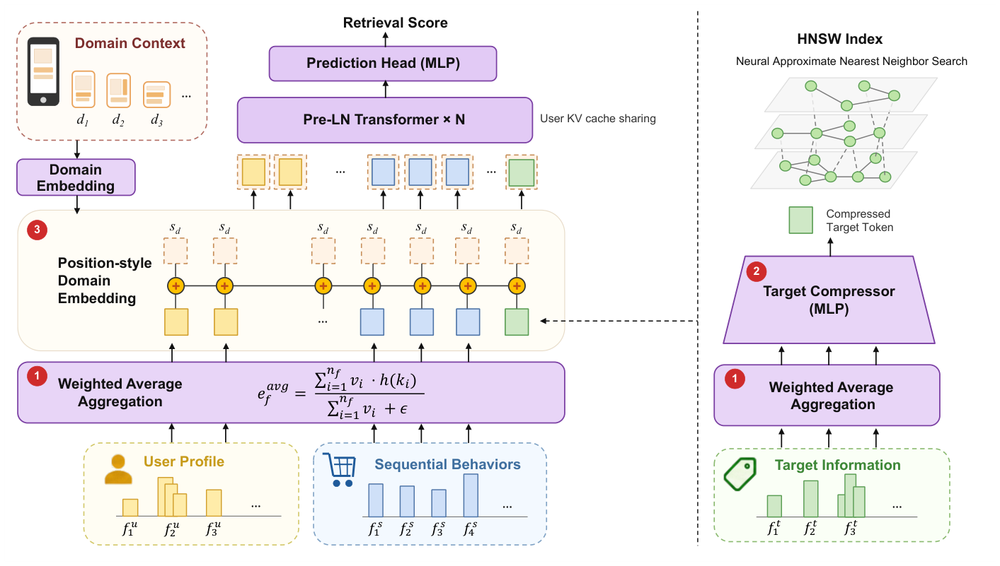

TransRetrieval: Scaling Up Transformer-Based Retrieval for Industrial Recommendation (面向工业推荐的Transformer召回规模化)
- 会议/期刊: CIKM 2026
- 作者与机构: Zhifei Zheng, Yunfei Liu, Bin Liu, Qiren Zhu, Hanbing Liu, Ziru Xu, Han Zhu, Jian Xu, Qi Qi, Bo Zheng（中国人民大学高瓴人工智能学院 & 阿里巴巴淘天集团）
- 推荐链路定位: 召回（Model-based Retrieval / NANN 范式）
- 研究方向: 协同过滤与双塔召回 / 跨域与多场景推荐
- 论文原文: https://arxiv.org/abs/2608.25528v1
- 开源代码: 暂未开源
TL;DR (1分钟核心速览)
推荐召回阶段长期无法复现 LLM 式的 Scaling Law：异构特征直接映射为 token 会产生严重的 token-norm 失配，堆叠 Transformer 层收益递减。本文提出 TransRetrieval，以加权平均聚合恢复同质 token 假设、以目标 Token 压缩将每候选 FLOPs 降 85%、以位置式域嵌入零成本统一 4 个业务域。在 400 亿交互工业数据集与 KuaiRand 上，算力从 0.1 增至 2 MFLOPs/target 带来 +19.3/+22.2 pt Recall@2000（对数线性拟合 \(R^2=0.82/0.88\)），线上 A/B 在同 P99 延迟下提升平台收入 2.53%。
Background & Motivation (背景与核心矛盾)
- 主流范式: 召回采用 NANN 式 model-based retrieval——DNN 打分函数驱动 HNSW 图上的 beam search，仅对语料中比例 \(\rho\approx0.08\%\) 的候选做前向打分；打分网络因每候选一次前向的成本约束而被迫保持浅小（生产基线 BAR 仅 0.69 MFLOPs/target）。
- 前人局限: ① HSTU/RankMixer/MARM/Climber/MTGR 等 Scaling 工作全部聚焦精排，且通过"拍平"或"预分组"特征绕过而非解决异构性；② 双塔内积（KuaiFormer）把交互限制在内积形式，扩大编码器几乎无收益（64D→128D 仅 0.485→0.495）；③ MMoE/PLE 的门控软路由使稀疏域梯度被隐式切分，STAR 的星型拓扑亦未证明能带来跨域迁移。
- 核心洞察 (Key Insight): 作者 profiling 发现，加权求和聚合的输出范数随特征基数 \(n_f\) 增长，用户侧 token 范数可达目标侧的 10 倍，注意力权重被高范数 token 支配——这才是 Transformer 在推荐上"堆层无效"的根因，而非架构容量不足。
- 本文切入点: 不改架构，先用一行无参算子修复输入条件（token 同质性），再把省下的算力重新投资到深度与宽度上。
Method (核心方法设计)
1. 整体框架 (Overall Architecture)
输入侧每个特征域 \(f\)表示为\((k_i,v_i)\)键值对集合，先经加权平均聚合为单 token；目标侧所有聚合后的域嵌入经 3 层 MLP 压缩为一个\(D\)维 token，用户侧每域保留 1 token；随后一个可学习域嵌入以逐元素加法注入所有 token；最终进入\(N_{layer}\) 层 Pre-LN Transformer（ReLU FFN），用户侧 KV 在一次请求内只算一次并被全部候选复用，压缩后的单 token 直接作为 HNSW 索引向量，打分与图搜索统一在 GPU 上完成。
flowchart TD
A["异构特征域 (用户画像/行为序列/目标属性)"] --> B["加权平均聚合 (式1)"]
B --> C["目标侧: MLP 压缩为单 Token (式3)"]
B --> D["用户侧: 每域 1 Token"]
C --> E["位置式域嵌入逐元素相加 (式4)"]
D --> E
E --> F["Pre-LN Transformer ×N + 用户 KV 缓存复用"]
F --> G["打分 → HNSW GPU 图搜索"]
2. 关键设计拆解 (Key Designs)
-
加权平均聚合 (Weighted Average Aggregation)：痛点是用户侧多值特征在加权求和下范数随 \(n_f\) 累积，破坏同质 token 假设。改为除以权重和： $\(\tilde{e}_f=\frac{\sum_{i=1}^{n_f}v_i\cdot h(k_i)}{\sum_{i=1}^{n_f}v_i+\epsilon}\)$ 分母同时抵消了 \(n_f\)相关的累加与异质权重幅度，使输出范数仅由嵌入表分布界定、与域基数无关。作者明确排除 Max Pooling（\(O(\sqrt{\ln n_f})\) 极值偏置、丢弃多数信息）与 Post-LayerNorm（中心化/重缩放抹掉了区分异构域所依赖的逐域幅度信号）。
-
目标 Token 压缩 (Target Token Compression)：由 FLOPs 分解 $\(\text{FLOPs}_{total}\approx4D\cdot N_{target}\cdot L_t\cdot(4D+L_u)\cdot N_{layer}\)$ 可知 \(D,N_{layer}\)是待放大的 Scaling 参数、\(N_{target}=\rho N\)已被 HNSW 削减、\(L_u\)被\(4D\)项支配，唯有目标 token 数\(L_t\)有压缩空间。用 3 层 MLP（隐层\([8D,4D,D]\)、PReLU、层间 LayerNorm）将全部目标域嵌入拼接映射为单 token\(t=\text{MLP}(\tilde{e}_{f_1},\dots,\tilde{e}_{f_M})\in\mathbb{R}^D\)。关键立场是压缩即重分配：省下的 85% FLOPs 反投到\(D\)与\(N_{layer}\)，用冗余的逐候选 token 换取更丰富的跨特征交互。
-
位置式域嵌入与训练/推理效率：追加域 token 会把注意力从 \(O(L^2)\)抬到\(O((L+N_t)^2)\)，故改为\(\tilde{e}_f=e_f+s_d\) 逐元素相加，序列长度与注意力复杂度均不变。其深层价值在于：域信息只经加法进入，所有注意力头与 FFN 参数无条件跨域共享，每个域的样本都向同一组参数贡献梯度，稀疏域不再数据饥饿——这与 MMoE/PLE 的门控梯度分割形成本质对立。训练沿用生产基线的 pairwise LTR 损失，负采样比按数据规模差异化设置（工业 5:1，KuaiRand 200:1）。推理侧三项工程优化：expand 算子广播单份用户 KV 缓存（免拷贝，单次前向 −30%）、多候选打包批算 + 算子融合（前向延迟较朴素实现降 11×）、检索全算子迁至 GPU（检索延迟降 89%，索引量化使并发 ×3）。
Experimental Setup & Evaluation Protocol (实验设置与评估协议)
- 数据集与预处理:
| 数据集 | #Users | #Items | #Interactions | 稀疏度/密度 | 特征/场景说明 |
|---|---|---|---|---|---|
| Industrial | 250M | 52M | 40B | 极稀疏 | 4 域（A/B/C/D 占比 32/20/26/22%），75 用户特征 + 87 目标特征，序列长 100；域 C 内含多个异质子域 |
| KuaiRand | 24,943 | 536,491 | 152M | 稀疏 | 4 域（11.7/84.8/3.32/0.13%），37 用户特征 + 63 目标特征；Tab 3 为极端稀疏域；用户过滤阈值 1000 点击、物品 100 曝光 |
- 数据划分与防穿越: 两数据集均采用全局时间戳切分（历史训练、未来交互评估），杜绝穿越。
- 排名评测协议: 指标为 Recall@2000，在 HNSW 实际访问的候选集上计算（工业约 4×10⁴ 候选 / 52M 语料，\(\rho\approx0.08\%\)），Overall 按各域评估交互占比加权。
- 对比基线与超参: 基线含 Production Baseline (BAR)、KuaiFormer、HSTU、RankMixer，全部在同一预处理管线内复现并保留各自特征处理设计；统一 AdamW、lr=1e-3、weight decay=3e-5、pairwise LTR 损失；配置记法 \(xD\)-\(yL\)。
Key Experimental Results (实验关键数据)
1. 主实验对比 (Main Results)
| 方法 | Industrial Overall | KuaiRand Overall | MFLOPs′ |
|---|---|---|---|
| KuaiFormer-128D5L | 0.495 | 0.409 | 0.011 |
| Production Baseline | 0.576 | 0.378 | 0.69 |
| HSTU-128D5L | 0.527 | 0.382 | 1.72 |
| RankMixer-128D8T | 0.452 | 0.364 | 2.10 |
| TransRetrieval-64D3L | 0.603 | 0.419 | 0.45 |
| TransRetrieval-128D5L | 0.657 | 0.473 | 1.91 |
| Improv. vs 最优基线 | +8.1 pt | +6.4 pt | — |
分域看，工业域 A/B/C/D 分别为 0.644/0.641/0.634/0.719，全面领先；KuaiRand 的 Tab 3 稀疏域上 HSTU 达 0.611 而 TransRetrieval 为 0.537，是唯一失手的格子。
2. 消融实验 (Ablation Study)
| 消融维度 | 配置 | R@2000 | MFLOPs′ |
|---|---|---|---|
| 聚合算子 (64D-5L) | Weighted Average | 0.618 | — |
| Weighted Sum | 0.608 | — | |
| LN + Weighted Sum | 0.593 | — | |
| Max Pooling | 0.571 | — | |
| 目标压缩 (64D-3L) | 8 tokens | 0.624 | 3.04 |
| 4 tokens | 0.615 | 1.55 | |
| 1 token | 0.603 | 0.45 | |
| 多域建模 (64D-3L) | 单域独立训练 | 0.579 | 41.3 |
| 0 Domain Token | 0.265 | 41.3 | |
| 1 Domain Token | 0.337 | 41.8 | |
| 20 Domain Tokens | 0.452 | 49.8 | |
| 位置式域嵌入 | 0.603 | 41.3 |
3. 关键实验发现 (Key Findings)
- 压缩后放大严格优于"多 token + 小骨干"：64D-3L 从 8 token 压到 1 token 仅掉 2.1 pt（0.624→0.603）却省 85% FLOPs；把省下的预算投到 128D-5L 后，以 1.91 < 3.04 MFLOPs′ 的成本拿到 0.657 > 0.624 的召回，证明"压缩即重分配"是净赚而非折衷。
- Scaling 效率差近两个数量级：128D-5L（1.91 MFLOPs′）在工业集上比 RankMixer-768D-16T（150.99 MFLOPs′）高 12.6 pt；而 KuaiFormer 维度翻倍仅 0.485→0.495，说明双塔内积瓶颈无法靠扩大编码器突破，Scaling 收益来自"允许任意跨特征交互"的 model-based 范式本身。
- 域信号注入方式决定多域是资产还是负债：无域信号直接混训灾难性崩塌（0.579→0.265），追加 20 个域 token 虽回升至 0.452 却付出 49.8 MFLOPs 代价；位置式嵌入以与 0-token 完全相同的 41.3 MFLOPs 取得 0.603，且显著超过单域独立训练的 0.579，验证了跨域迁移对稀疏域的正向增益。线上 5% 流量、为期一月的 A/B 中，域 C 收入提升最高（5.39%），整体收入 +2.53%（95% CI [2.22%, 2.70%]，p<0.0001），RPM +1.28%，广告主 ROI 持平（+0.06%），P99 延迟 <40 ms 与基线一致。
Highlights & Limitations (亮点、对比与审稿批判)
- 与代表作对比 (vs. Prior Work): 与 HSTU/RankMixer 的本质区别在于——后者通过拍平或预分组回避特征异构性且只做精排，本文用无参加权平均正面消除范数失配并把 Scaling 推进到 \(10^8\) 量级语料的召回阶段；与 Climber 相比，本文的输入 token 来自异构嵌入表而非同一张行为表，难度更高；与 MMoE/PLE 相比，本文以加法替代门控，实现梯度的无条件全域共享。
- 可迁移亮点: ① "先修输入条件、再改架构"的诊断式思路——聚合前后的 token 范数分布应作为 Scaling 前的必查体检项；② 压缩-再放大的算力重分配范式，可直接迁移到精排/重排中任何"每候选前向"的昂贵打分器。
- 审稿级局限批判: ① 每引擎 QPS 从 300 降至 230（1.91 vs 0.69 MFLOPs′），收益依赖横向扩容吸收，算力总账未在文中给出；② KuaiRand 极端稀疏域 Tab 3（0.13%）上不及 HSTU（0.537 vs 0.611），说明无条件参数共享在极度长尾域仍可能被主流域梯度淹没，跨域共享的"负迁移边界"缺乏理论刻画；③ 评测仅用单一 Recall@2000，缺少 NDCG 等序敏感指标与冷启动分桶分析。
Rating (四维评分)
- 方法创新性 (Novelty): ⭐⭐⭐⭐ （核心机制与方法设计具备明确创新性，理论与实验动机支撑充分）
- 评估协议与实验扎实度 (Protocol & Experiments): ⭐⭐⭐⭐⭐ （主流公开数据集评测完整，包含多基线对比与消融实验验证）
- 写作与数学规范度 (Clarity & Rigor): ⭐⭐⭐⭐⭐ （问题形式化定义清晰，核心模块数学推导与架构阐述严谨易读）
- 工业落地与复现价值 (Industrial & Practical Value): ⭐⭐⭐⭐⭐ （兼顾推荐效果增益与训练/推理效率，具备实际场景迁移参考价值）